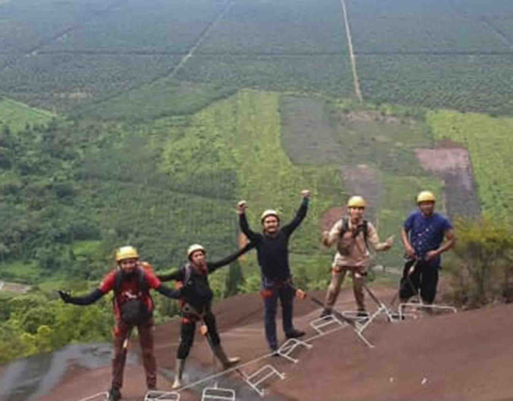

Celebration From Climbers in Via Ferrata

Via Ferrata adalah semacam jalur pendakian gunung/bukit yang menggunakan kabel atau kawat baja yang tertancap pada batu. Saat ini, pemerintah melalui Balai Konservasi Sumber Daya Alam (BKSDA) sedang membangun Via Ferrata, untuk menggantikan tangga besi yang sudah tak layak untuk digunakan lagi. Via Ferrata merupakan tangga besi yang ditanam di tebing gunung. Pendakian menggunakan tangga ini, dinilai lebih aman, karena dilengkapi pengaman. Selain itu, pendaki juga bisa merasakan adrenalin berbeda, karena pendakian yang lebih menantang.
Disetiap jalur dakian, para pendaki selalu mengambil beberapa gambar untuk dijadikan momen untuk dokumentasi bagi setiap komunitas pendaki.